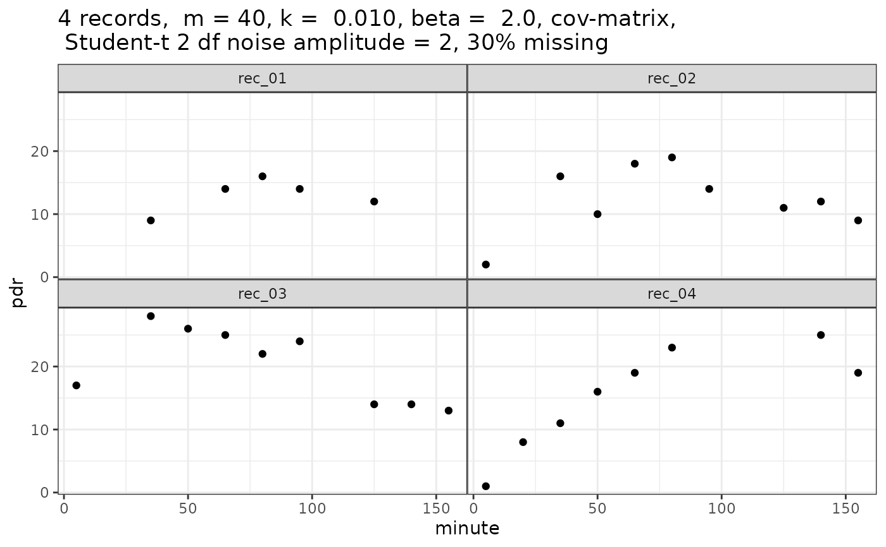
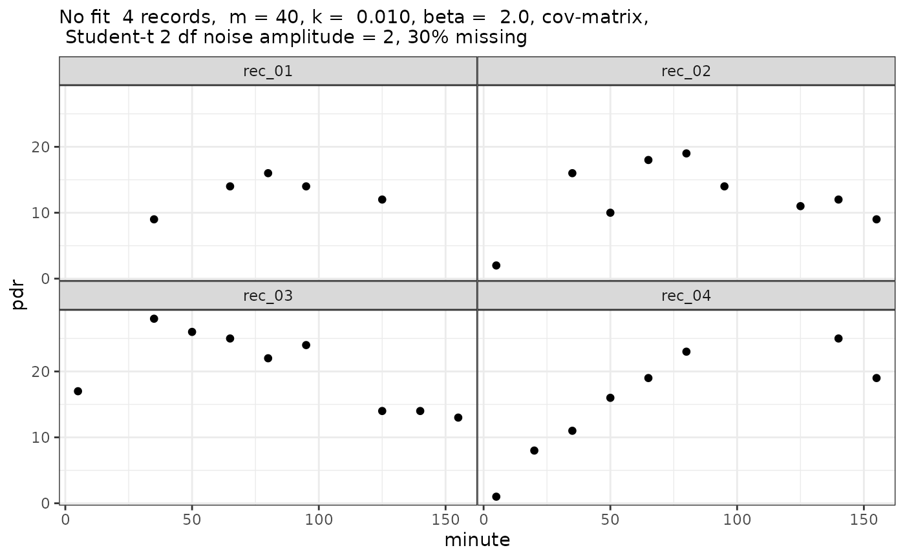

Simulate 13C breath time series data
Source:R/simulate_breathtest_data.R
simulate_breathtest_data.RdGenerates simulated breath test data, optionally with errors. If none of the three
standard deviations m_std, k_std, beta_std is given, an empirical covariance
matrix from USZ breath test data is used. If any of the standard deviations is given,
default values for the others will be used.
Usage
simulate_breathtest_data(
n_records = 10,
m_mean = 40,
m_std = NULL,
k_mean = 0.01,
k_std = NULL,
beta_mean = 2,
beta_std = NULL,
noise = 1,
cov = NULL,
student_t_df = NULL,
missing = 0,
seed = NULL,
dose = 100,
first_minute = 5,
step_minute = 15,
max_minute = 155
)Arguments
- n_records
Number of records
- m_mean, m_std
Mean and between-record standard deviation of parameter m giving metabolized fraction.
- k_mean, k_std
Mean and between-record standard deviation of parameter k, in units of 1/minutes.
- beta_mean, beta_std
Mean and between-record standard deviations of lag parameter beta
- noise
Standard deviation of normal noise when
student_t_df = NULL; scaling of noise when student_t_df >= 2.- cov
Covariance matrix, default NULL, i.e. not used. If given, overrides standard deviation settings.
- student_t_df
When NULL (default), Gaussian noise is added; when >= 2, Student_t distributed noise is added, which generates more realistic outliers. Values from 2 to 5 are useful, when higher values are used the result comes close to that of Gaussian noise. Values below 2 are truncated to 2.
- missing
When 0 (default), all curves have the same number of data points. When > 0, this is the fraction of points that were removed randomly to simulate missing
- seed
Optional seed; not set if seed = NULL (default)
- dose
Octanoate/acetate dose, almost always 100 mg, which is also the default
- first_minute
First sampling time. Do not use 0 here, some algorithms do not converge when data near 0 are passed.
- step_minute
Inter-sample interval for breath test
- max_minute
Maximal time in minutes.
Value
A list of class simulated_breathtest_data with 2 elements:
- record
Data frame with columns
patient_id(chr), m, k, beta, t50giving the effective parameters for the individual patient record.- data
Data frame with columns
patient_id(chr), minute(dbl), pdr(dbl)giving the time series and grouping parameters.
A comment is attached to the return value that can be used as a title for plotting.
Examples
library(ggplot2)
pdr = simulate_breathtest_data(n_records = 4, seed = 4711, missing = 0.3,
student_t_df = 2, noise = 1.5) # Strong outliers
#
str(pdr, 1)
#> List of 2
#> $ record:'data.frame': 4 obs. of 5 variables:
#> ..- attr(*, "cov")= num [1:3, 1:3] 1.88e+02 -2.60e-02 -2.04 -2.60e-02 7.74e-06 4.77e-04 -2.04 4.77e-04 1.82e-01
#> .. ..- attr(*, "dimnames")=List of 2
#> $ data : tibble [31 × 3] (S3: tbl_df/tbl/data.frame)
#> ..- attr(*, "comment")= chr "4 records, m = 40, k = 0.010, beta = 2.0, cov-matrix, \n Student-t 2 df noise amplitude = 2, 30% missing"
#> - attr(*, "class")= chr [1:2] "simulated_breathtest_data" "list"
#
pdr$record # The "correct" parameters
#> patient_id m k beta t50_maes_ghoos
#> 1 rec_01 30 0.0086 2.0 142
#> 2 rec_02 27 0.0140 2.4 100
#> 3 rec_03 46 0.0098 1.4 97
#> 4 rec_04 56 0.0076 2.2 169
#
# Explicit plotting
ggplot(pdr$data, aes(x = minute, y = pdr)) + geom_point() +
facet_wrap(~patient_id) + ggtitle(comment(pdr$data))

#
# Or use cleanup_data and null_fit for S3 plotting
plot(null_fit(cleanup_data(pdr$data)))
